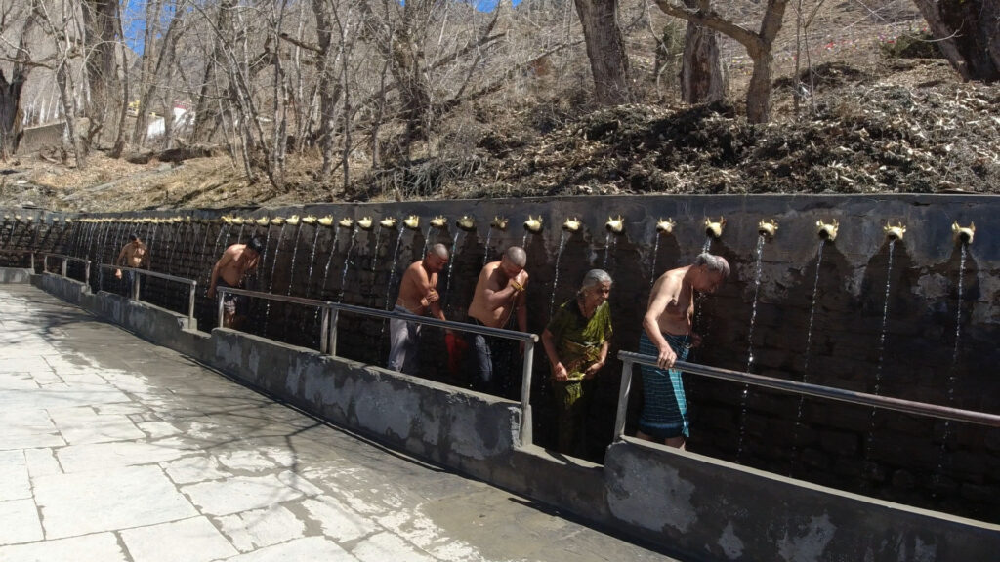
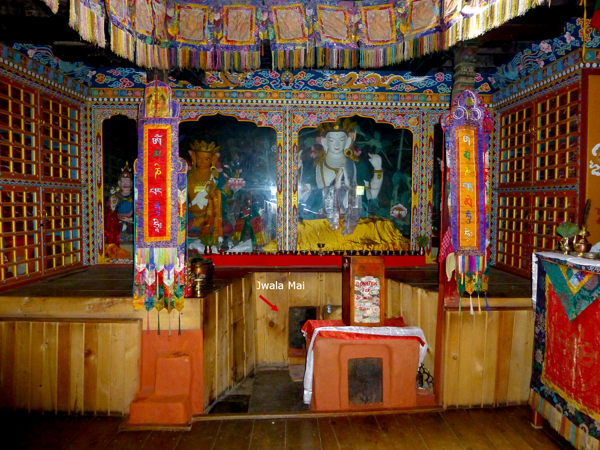

At 3,710 meters in the remote Mustang district of Nepal, where the wind carries ancient prayers and snow peaks touch the sky, lies Muktinath—one of the world's highest and most sacred pilgrimage sites. This is where Hindu and Buddhist traditions converge, where natural gas flames burn eternally beside 108 sacred water spouts, and where pilgrims believe a single visit can wash away a lifetime of sins. My journey to this celestial abode wasn't just travel; it was transformation.

The Call of Moksha
For centuries, Muktinath has been whispered about in sacred texts and pilgrimage narratives. Known as "Mukti Kshetra" (Place of Liberation) in Sanskrit and "Chumig Gyatsa" (Hundred Waters) in Tibetan, this site holds profound significance for both Hindus and Buddhists. My pilgrimage began not with packing bags, but with studying ancient scriptures—the Vishnu Purana mentions it, Buddhist texts reference it, and local legends speak of its mystical origins.
What makes Muktinath unique is its remarkable natural phenomena: 108 water spouts fed by glaciers, arranged in a semi-circle behind the main temple, and an eternal flame that burns from natural gas seepages—water, fire, earth, and air all manifesting their sacred forms in one location. This convergence of elements represents the fundamental building blocks of the universe in Hindu philosophy, making Muktinath a living mandala of cosmic principles.
"In Muktinath, the mountains don't just point to heaven—they are heaven touching earth." — Ancient Pilgrim Saying
As a pilgrimage guide for over fifteen years, I've witnessed countless transformations at Muktinath. I've seen cynical travelers become devout pilgrims, observed healing that defied medical explanation, and felt the palpable energy that permeates this high-altitude sanctuary. This journey is not for the faint-hearted—the altitude, the challenging terrain, the basic accommodations—but every hardship becomes part of the purification process.
The Sacred Tapestry: Hindu and Buddhist Convergence
Hindu Significance: Vishnu's Abode
For Hindus, Muktinath is one of the 108 Divya Desams (most sacred Vishnu temples) mentioned in the works of Tamil Alvars. The temple is dedicated to Lord Vishnu in his form as "Muktinath" or "Muktikanta" (Lord of Liberation). According to legend, this is where Vishnu turned into the Saligram stone (ammonite fossil) to answer the prayers of the serpent king Vasuki. The Saligram stones found in the Kali Gandaki River are considered direct manifestations of Vishnu and are highly prized for worship.
The number 108 holds deep significance in Hinduism—representing the 108 Upanishads, 108 pressure points in the human body, and 108 beads in a mala (prayer beads). Bathing under all 108 water spouts is believed to cleanse the soul of 108 types of sins and impurities, leading to mukti (liberation from the cycle of birth and death).

Buddhist Significance: Padmasambhava's Meditation Site
For Tibetan Buddhists, Muktinath is known as Chumig Gyatsa, one of the 24 Tantric places associated with Guru Rinpoche (Padmasambhava), who meditated here on his way to Tibet in the 8th century. The site is considered one of the 51 Shakti Peethas (where body parts of Sati fell) in some traditions, and as a place where dakinis (sky dancers) gather.
The convergence is beautifully manifested in the temple's worship practices. Hindu priests (Brahmins from South India) perform puja alongside Buddhist monks. The Mharme Lha Khang Gompa (Monastery of the Hundred Lights) stands adjacent to the main temple, and pilgrims from both traditions often visit both sites, light butter lamps together, and participate in each other's rituals with mutual respect.
The Eternal Flame: Jwala Mai Temple
Perhaps the most mystical aspect of Muktinath is the Jwala Mai Temple, where natural gas flames burn continuously from water, rock, and a small stream. This triad of elements—earth (stone), water (stream), and fire (flame)—represents the Trimurti (Brahma, Vishnu, Shiva) in Hinduism and the Three Jewels (Buddha, Dharma, Sangha) in Buddhism. Scientific studies have confirmed the presence of methane gas, but for pilgrims, this is prana (life force) made visible, a divine miracle that has burned for centuries.
I remember an elderly Tibetan nun telling me, "The flame has never gone out, not even during earthquakes or avalanches. When all other lights fail, this one remains. Like the Buddha nature within us—always present, even when unseen."
The Pilgrim's Path: Journey Through Sacred Geography
Approach from Pokhara: The Road to Devotion
Most pilgrimages begin in Pokhara, with the journey to Muktinath taking two days by road. The route follows the Kali Gandaki Gorge—the world's deepest gorge—flanked by Dhaulagiri (8,167m) to the west and Annapurna (8,091m) to the east. Each village along the way has its own sacred significance:
- Beni: Confluence of Kali Gandaki and Myagdi Rivers, considered auspicious
- Tatopani: Natural hot springs for ritual purification
- Ghasa: Traditional Thakali villages with ancient Buddhist monasteries
- Marpha: The "Apple Capital" with beautiful whitewashed houses and monasteries
- Jomsom: District headquarters with stunning views of Nilgiri peaks
The journey itself becomes a moving meditation. The landscape transforms from subtropical forests to arid, Tibetan-style terrain, mirroring the pilgrim's inner journey from worldly concerns to spiritual focus. The constant roar of the Kali Gandaki River serves as a reminder of impermanence—a central teaching in both Hinduism and Buddhism.

Spiritual Preparation
Before visiting Muktinath, many pilgrims undertake specific preparations:
- Vratas (Vows): Some observe fasting or specific dietary restrictions for 41 days
- Mantra Recitation: Chanting Vishnu Sahasranama or Om Mani Padme Hum
- Simplification: Reducing material possessions and attachments
- Confession: Reflecting on and acknowledging past wrongs
- Generosity: Practicing dana (charity) along the journey
These practices help condition the mind and body for the pilgrimage's physical and spiritual demands.
The Final Ascent: Jomsom to Muktinath
From Jomsom, the road climbs steadily to Muktinath. Many pilgrims choose to walk this final 20-kilometer stretch, considering it part of their penance. The path winds through Kagbeni—a medieval village that feels frozen in time, with its narrow alleys, ancient monastery, and dramatic cliffside location. Kagbeni serves as the gateway to Upper Mustang and has its own sacred energy, with pilgrims often stopping to pray at the Red Monastery.
As you approach Ranipauwa (the settlement below Muktinath), the first glimpse of the temple complex takes your breath away—both literally and spiritually. Perched on a ridge with the snow-capped Himalayas as backdrop, the golden kalash (pinnacle) of the main temple shines in the thin mountain air. The sound of bells and chanting grows audible, mingling with the constant wind that carries prayers across the valley.
I always advise pilgrims to arrive in the afternoon, settle into their accommodation, and wait until early morning for their first darshan (sacred viewing). The sunrise over the Himalayas, with the temple illuminated in golden light, is an experience that bypasses the intellect and speaks directly to the soul.
Within the Sacred Precincts: Rituals and Experiences
The Sacred Bath: Purification at 108 Spouts
The central ritual at Muktinath is bathing under the 108 water spouts (Muktidhara). The water originates from the Gandaki River glacier and flows through underground channels before emerging through bull-headed spouts. The water is freezing cold, even in summer, but pilgrims believe the discomfort is part of the purification process.
The ritual typically follows this sequence: First, pilgrims bathe in the two kundas (ponds) near the entrance—one for men (Laxmi Kunda) and one for women (Saraswati Kunda). Then, moving to the semi-circular wall, they bathe under each of the 108 spouts, reciting mantras or prayers. The water is believed to have healing properties, with specific spouts associated with curing particular ailments according to local tradition.

Main Temple Rituals
After purification, pilgrims enter the main temple complex. The architecture follows pagoda style with influences from both Hindu and Buddhist traditions. Key rituals include:
- Darshan of Muktinath: Viewing the black stone idol of Vishnu as Muktinath
- Saligram Puja: Worship of ammonite fossils considered forms of Vishnu
- Butter Lamp Offering: Lighting ghee lamps at both Hindu and Buddhist shrines
- Mala Offering: Presenting prayer beads for blessing
- Prasad Collection: Receiving blessed food offerings
The temple priests (from the Sri Vaishnava tradition of South India) perform elaborate pujas throughout the day. Non-Hindus are welcome in most areas, though the innermost sanctum may have restrictions. Respectful observation is always appreciated, and photography inside the main shrine is generally prohibited.
Buddhist Monasteries and Stupas
The Muktinath complex includes several important Buddhist sites:
- Mharme Lha Khang: The "Monastery of Hundred Lights" with beautiful murals
- Dhola Mebar Gompa: Associated with Guru Rinpoche's meditation
- Chortens and Mani Walls: Circumambulation paths with prayer wheels
- Sky Burial Site: Nearby location for traditional Tibetan funeral rites
Many pilgrims complete koras (circumambulations) around the entire complex, spinning prayer wheels and reciting mantras. The most devout perform full-body prostrations along the path—a powerful display of devotion that embodies the surrender central to both traditions.
"At 3,710 meters, the air is thin but the presence is thick. Every breath feels like a prayer." — Pilgrim's Journal
Special Ceremonies and Festivals
Muktinath comes alive during specific festivals:
- Ramlila (September/October): Dramatic reenactment of Lord Rama's life
- Muktinath Yatra (April/May): Major pilgrimage season coinciding with Akshaya Tritiya
- Guru Purnima (July): Buddhist celebration honoring Guru Rinpoche
- Lhosar (February): Tibetan New Year with masked dances
- Mela (Full Moon Days): Special pujas attracting thousands
During these times, the normally remote site transforms into a vibrant spiritual marketplace, with pilgrims, sadhus, monks, and locals creating a tapestry of devotion that transcends cultural boundaries.
Practical Pilgrimage: Planning Your Sacred Journey
Best Time for Pilgrimage
The pilgrimage season runs from March to November, with peak periods during:
- Spring (March-May): Pleasant weather, blooming rhododendrons
- Autumn (September-November): Clear skies, stable weather (most popular)
- Monsoon (June-August): Challenging but fewer crowds
- Winter (December-February): Extremely cold, some services closed
Many pilgrims aim for auspicious dates according to the Hindu calendar, particularly during:
- Ekadashi (11th lunar day)
- Purnima (Full Moon)
- Amavasya (New Moon)
- Solar/Lunar Eclipse periods
- Maha Shivaratri (February/March)
Health and Altitude Considerations
Muktinath sits at 3,710 meters (12,172 feet). Altitude sickness is a real concern:
- Acclimatize: Spend 2 nights in Jomsom (2,720m) before ascending
- Hydrate: Drink 3-4 liters of water daily
- Recognize Symptoms: Headache, nausea, dizziness, insomnia
- Medication: Consult doctor about Diamox (acetazolamide)
- Pace: Move slowly, rest frequently
- Avoid: Alcohol, smoking, heavy meals
Elderly pilgrims or those with heart/lung conditions should consult physicians and consider helicopter options.
Travel Options and Itineraries
Several approaches to Muktinath cater to different abilities and timeframes:
- Helicopter Pilgrimage (1 day from Pokhara): For elderly, time-limited, or physically challenged pilgrims
- Road Journey (4-5 days round trip from Pokhara): Most common approach
- Trekking Pilgrimage (7-10 days): Combining Muktinath with Annapurna Circuit
- Classic Pilgrimage Route (8 days): Pokhara-Jomsom-Muktinath-Tatopani-Pokhara
- Spiritual Retreat (10-14 days): Extended stay with meditation and study
Essential Packing List for Pilgrims
Beyond regular trekking gear, pilgrims should consider:
- Ritual Items: Mala beads, incense, camphor, offerings
- Bathing Supplies: Towel, change of clothes for sacred bath
- Cold Protection: Thermal layers, down jacket, warm hat
- Footwear: Comfortable shoes for temple walking + flip-flops for water spouts
- Medication: Altitude, personal medicines, first aid
- Documents: Passport, permits, insurance, emergency contacts
- Spiritual Materials: Prayer books, texts, journal
Accommodation and Facilities
Ranipauwa (Muktinath village) offers basic to moderate accommodations:
- Teahouses/Lodges: $5-20 per night with attached dining
- Pilgrim Hostels: Dormitory-style, sometimes donation-based
- Monastery Stays: Basic rooms for serious practitioners
- Hotels in Jomsom: Better facilities for acclimatization
Facilities are basic—electricity may be limited, hot water often costs extra, and WiFi is unreliable. Vegetarian food is widely available, with local specialties like Thakali dal bhat, buckwheat bread, and apple products from Marpha.
Permits and Regulations
Required documents include:
- ACAP Permit: Annapurna Conservation Area Permit (NPR 3000 for foreigners)
- TIMS Card: Trekker's Information Management System (NPR 2000)
- For Upper Mustang: Additional $500 permit required beyond Kagbeni
- Domestic Flights: Pokhara-Jomsom flights often fully booked in season
Since 2023, independent travelers must hire a registered guide. For pilgrimage groups, working with specialized pilgrimage tour operators who understand both the spiritual and practical aspects is highly recommended.
Estimated Costs (2024)
Budget options: $500-800 (group tour, basic accommodation)
Moderate comfort: $800-1500 (better lodging, some helicopter segments)
Luxury pilgrimage: $1500-3000 (helicopter tours, best hotels, personalized services)
Additional: Donations at temples, purchases of religious items, tips for guides/porters
The Pilgrim's Return: Carrying the Sacred Home
Departing Muktinath feels different from arriving. The same landscape now holds personal meaning—each bend in the road recalls a prayer, each village a kindness received, each mountain vista an insight gained. Pilgrims often carry back Saligram stones, blessed malas, or vials of sacred water—but the true treasures are intangible.
I've observed common transformations in returning pilgrims: a softening of edges, a deepening of compassion, a simplification of priorities. The physical challenges faced—the altitude, the cold water, the long journey—become metaphors for spiritual perseverance. Many report a sense of lightness, as if literal burdens have been washed away in those freezing waters.

One pilgrim from Mumbai shared with me: "I came seeking forgiveness for specific wrongs. But at Muktinath, I realized I needed to forgive myself. The 108 waters didn't just wash away sins—they washed away my attachment to being a sinner." Another, a Buddhist nun from Ladakh, said: "Here, I understood that Hindu and Buddhist paths are like two rivers meeting in the ocean. Different routes, same destination."
Integrating the Experience
Returning home requires integration. Many pilgrims continue practices begun on the journey: morning meditation, simple living, regular charity. Some establish home shrines with Saligram stones or Muktinath water. Others become advocates for the environment, having witnessed the fragility of the Himalayan ecosystem.
The community aspect often continues through pilgrim associations, online groups, or annual gatherings. I know pilgrims who've returned annually for decades, forming bonds with local families and contributing to community projects—schools, health clinics, environmental initiatives. Their pilgrimage becomes ongoing, their devotion expressed through service.
The Future of Muktinath Pilgrimage
Muktinath faces challenges familiar to sacred sites worldwide: balancing accessibility with preservation, managing tourism impacts, maintaining authentic traditions amidst commercialization. Road improvements bring more pilgrims but also more pollution. Helicopter services make the site accessible to all but change its remote character.
Responsible pilgrimage is more crucial than ever. This means:
- Respecting local customs and sacred spaces
- Minimizing environmental impact (carry out waste, reduce plastic)
- Supporting local economies fairly
- Traveling in smaller groups during off-peak times when possible
- Educating oneself about both Hindu and Buddhist traditions
The temple authorities and local community have done remarkable work maintaining the site's sanctity while accommodating increasing numbers. New water management systems preserve the sacred flows, solar power reduces fossil fuel use, and community-based tourism initiatives ensure benefits reach local people.
As you consider your own journey to Muktinath, remember that pilgrimage is ultimately interior. The external journey—the flights, the roads, the mountains—merely provides the container. What you fill it with—your intentions, your openness, your devotion—determines the transformation.
Whether you come as Hindu seeking moksha, as Buddhist honoring Guru Rinpoche, as spiritual seeker drawn by the sacred convergence, or simply as human yearning for connection with something greater—Muktinath welcomes you. The waters flow, the flame burns, the mountains stand witness, and the heart finds what it seeks.
As the pilgrims say when parting: "Jai Muktinath! Tashi Delek! May your journey bring liberation and light."